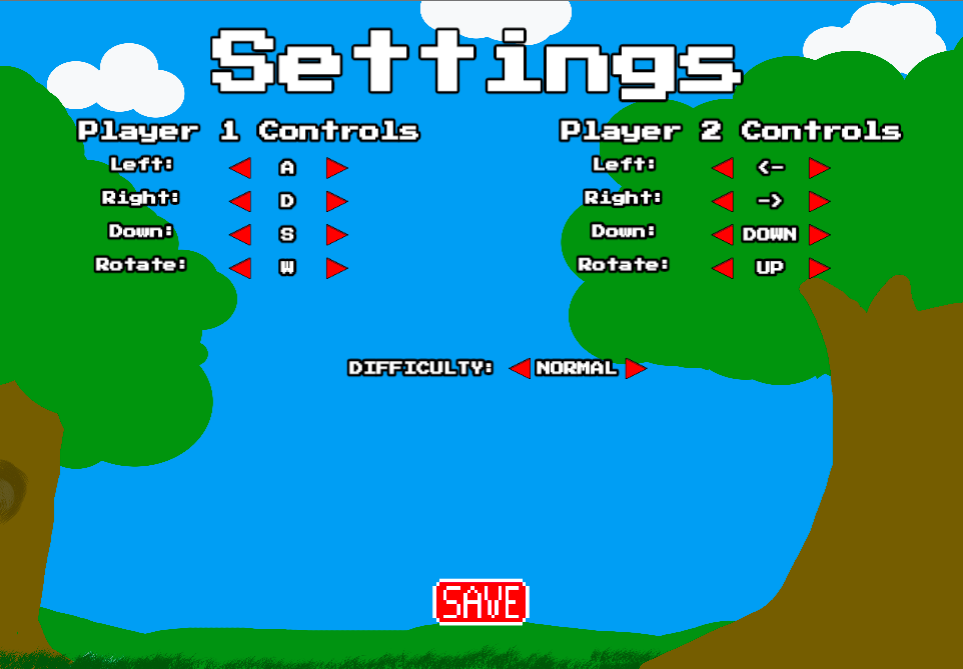

Puyo Puyo is a local two-player game where both players use the same keyboard and complete against each other. Each player has a set of controls to move the blob pair left, right, or down, as well as a pair of keys to rotate the blob pair clockwise and counterclockwise.
Player 1 Controls
Player 2 Controls
These controls are the default choices, but they can be customized under the settings panel.
